ReuseGR：以自适应前缀复用解耦离线规划与在线个性化检索
ReuseGR 研究搜索广告中的生成式检索：让较大的模型提前规划同一查询可共享的语义标识符前缀，再由较小模型结合当前用户历史在线补全。论文作者为 Xujing Wang、Yufeng Chen、Boxuan Zhang、Chao Wei、Cai Xu、Jie Zhao、Weiru Zhang、Wei Zhao、Ziyu Guan；一作来自西安电子科技大学，合作机构包括阿里巴巴国际数字商业集团。论文于 2026 年 11 月 3 日首次提交，本文访问与核验日期为 11 月 5 日。论文入口：arXiv:2611.04259。本轮未核验到独立公开代码仓库；正文使用的工业日志仍属私有数据，页面上的 WWW ’27 模板文字不作为正式录用证据。
更大的生成式检索模型能够提高召回质量，但为每次请求完整生成语义标识符会重复相同查询的规划计算。不同用户的交互历史又要求不同结果，因此需要共享大模型的计算，同时保留请求级的个性化选择。
1. 背景和问题
搜索广告需要从百万级商品目录中快速找出可交给下游排序的候选。传统双塔检索先把物品编码为向量，再通过索引近邻搜索；生成式检索则直接预测物品标识符，让模型参数承担部分候选组织功能。论文采用四层语义标识符，每层有三十二个码字，前两层构成较粗的语义单元，完整四层对应一个物品桶，而非必然对应单件商品。这样的层级结构既让生成过程能够逐步缩小搜索空间，也意味着早期的粗方向和最后的细粒度选择不一定需要同一种计算。在同一个查询被很多用户反复使用时，每次从根节点计算四层，看似请求之间独立，实际上可能重复了大量共享的语义规划。
最直接的优化是缓存完整结果，但它把共享边界放得太深。对同一个查询，用户可能具有不同品牌偏好、价格区间或近期购买背景；如果缓存固定的一百个完整标识符，后续只做重排，就无法找回缓存列表之外的目标。扩大缓存到五百或一千个可以缓和覆盖问题，却增加存储和重排计算。另一种做法是把大模型蒸馏为小模型，让所有请求继续执行完整在线解码。这减少单步计算，却没有消除跨请求重复。ReuseGR 想保留两边的优点：离线共享的是仍然包含多个潜在结果的前缀子树，而非最终商品列表；在线保留历史条件下的后缀生成，使不同用户能够走向不同叶节点。
这个问题并不能用“所有查询都缓存前两层”彻底解决。某些查询意图很集中，较深前缀仍覆盖大多数历史目标；另一些查询意图较宽，过早确定第三层会排除大量与当前用户相关的候选。缓存越深，剩余在线步骤越少，候选可达范围却越窄；缓存越浅，个性化空间更大，节省的计算又更少。论文把共享深度定义为查询级变量，允许零至三层，最多保留三十二个前缀。零层表示从空根开始在线补全，但它和真正的冷缓存请求仍需区分：前者使用已蒸馏的补全器，后者直接走原有的独立端到端小模型。这一区别决定了缓存准备率不能简单等同于正深度条目的比例。
作者用点击日志提供前缀复用的经验依据，而没有先假定粗层一定只取决于查询。KeyProbe 固定真实前缀，分别用同查询其他记录和全局记录的高频下一个码字预测目标，并整行留一以避免该行给自己答案。前两层的查询特定信息贡献明显更大，但第三、第四层的统计支持集也逐渐变小。因此，深层增益小不能被解释为历史信息已被完全证明重要，更不能推导出查询在深层没有作用。论文另外用大、小模型的逐词预测差距检查蒸馏空间：即使查询相对全局众数的增益减弱，大模型相对小模型仍有优势。这两种诊断的比较对象与分母不同，分别服务于共享边界和后缀蒸馏两个设计决定。
前缀共享之后，系统还会遇到“候选越多，结果反而可能越差”的集合效应。每个三层前缀分支都会产生若干四层叶节点，最终把多个分支的叶子合在一起按同一个分数排序。一个单独分数很高的分支可能带来很多非目标叶子，把其他分支的相关结果挤出前一百名。因此，选择分支并不是独立选出三十二个分数最高的前缀，而要看它与已经选中的分支合并后的边际作用。论文让一个很小的准入策略学习这个集合问题，并将其与负责生成、评分的小模型分开训练。这也改变了理解加速的方式：策略是在最后一层已经批量评分后减少合并排序池，不应被描述成提前省掉全部末层模型计算。
本文同时关心三个层次的质量。第一是查询级完整标识符命中：对一个查询是否找到了任一点击目标；第二是覆盖：多个目标中找回了多少；第三是真实请求历史是否改变结果并改善其对应点击目标的命中。命中率接近大模型，不代表覆盖率也接近，查询宏平均也不能替代请求行宏平均。实际商品还需从标识符桶中扩展，桶内排序会进一步改变物品级结果。对搜索广告工程，只有把这些分母和处理阶段分开，才能判断模型究竟学会了个性化、扩大了目标覆盖，还是只是提高了找到一个热门目标的概率。
从大模型应用角度看，ReuseGR 选择的是一种可检验的分工：把相对稳定、跨用户共享的查询语义交给较大模型，在线只执行需要新鲜用户历史的细化，并用蒸馏补偿较小模型的能力损失。它没有声称共享部分天然与用户无关，也没有取消缓存维护、目录约束或小模型训练。值得阅读之处，是将共享深度、后缀评分和集合准入分别安排了受控实验，并把已准备前缀、冷回退和混合流量列为不同情景。后续能否迁移到推荐信息流、对话检索或检索增强生成，需要重新定义可共享的键、可容忍的陈旧度和不可丢失的个性化信号；论文的正向证据集中在其工业搜索广告设置。
原文的监督信息也有时间边界。深度标签来自既有点击记录，模型生成的前缀另由训练好的大模型规划；两者不能共享测试目标来直接选最佳深度。作者在训练构建时整行留一，在跨天支持分析中使用前一天缓存，并把训练、开发查询拆开。这样的设计减少了直接目标泄漏，却不等于完全消除采样偏差或历史选择偏差。点击本身已受旧召回排序和曝光影响，未点击物品未必不相关；离线集合奖励只能在这些已观测目标上衡量。因而离线改进与线上随机试验具有互补作用：前者帮助定位模块，后者检查完整替换是否改善真实业务。论文没有用离线覆盖代替在线结论，阅读笔记也应保持这条证据链。
2. 方法
2.1 ReuseCut：根据覆盖证据选择共享边界
共享单位是查询的前缀集合，在线变化单位是请求的用户历史。 请求写成查询与历史的组合，模型在合法目录树中逐层生成四个码字。若已有深度为某值的前缀，则只需继续执行剩余层；但在线时间仍包含查找、上下文编码、不同分支的展开、最终读取及合并排序。论文用下式区分概率分解与时延组成，而没有把“减少一层”直接写成固定比例的加速。
符号解释：$x=(q,h)$ 为查询与近期历史，$y$ 是完整语义标识符，$L=4$ 为总层数，$d$ 为缓存深度，$M_t$ 为第 $t$ 层实际评分分支数，$t_0$ 是查询与缓存查找开销，$t_r$ 包含分支准入及合并排序。这个表达式对应原文公式一、三。它说明相同深度下分支数不同也会造成不同成本，因此深度分配和分支策略应分开评估；本式也没有计入离线规划成本，后者需要单独摊销。对于已准备的零深度请求，使用空根和蒸馏补全器；没有准备条目的冷请求则走独立端到端模型，不能把两个零前缀路径混为同一质量端点。
七十亿参数的 CellPlan 根据查询独立生成每个深度最优的三十二个合法前缀。生成候选的模型前缀，与生成深度监督标签的历史前缀，是两套集合。 后者按点击质量排序，训练数据整行留一，跨天分析使用前一天日志；作者先检查每层历史覆盖的 Wilson 下界，再取连续通过阈值的最深位置。用模型前缀计算真正可达性，才能检验经验标签有没有转化为部署候选覆盖。
符号解释：$\mathcal V_s$ 是目录占用的深度 $s$ 合法前缀，$\mathcal C_s$ 是模型规划集合，$\mathcal E_s^{(r)}$ 是排除当前行后按历史点击构造的参照集合，$J(q)$ 为该查询聚合结果行、$n_q$ 为行数；$\widehat C_s$ 是整行覆盖率，$C_s$ 是 Wilson 下端点，$z=1.96$，$\tau_C=0.4$。公式四至六与附录二十四给出这些定义，点击权重另用于前缀频次，不能把行数直接换成点击总量。少于五行的查询标为 Unknown，构建训练缓存时保守取零深度，不参与分类器拟合；有标签查询训练基于字符三至五元组与长度特征的平衡多类逻辑回归。在线只凭查询文本预测深度，这允许新查询预备缓存，却不意味着未知查询已经被历史覆盖保证。Wilson 下界在这里是标签规则，也不是对未来分布漂移的正式保证。
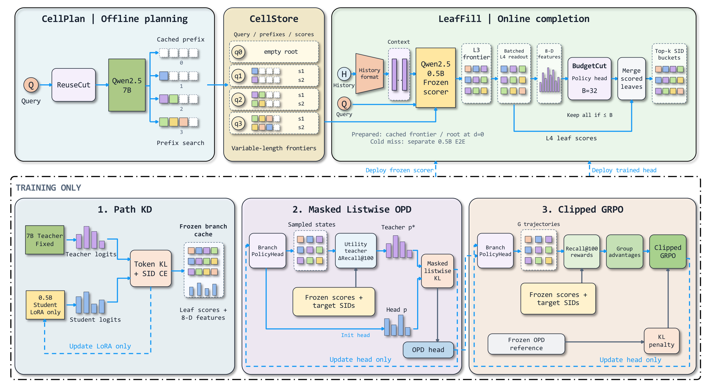
Figure 2 上半部分先把查询送到 ReuseCut，决定 CellPlan 应准备多深的前缀，CellStore 保存查询、深度、前缀和累积评分；右边 LeafFill 每次都接入当前历史，在共同的第三层分支前沿之后批量读取第四层分数，再进入 BudgetCut 和叶节点合并。图中的空根条目说明已准备但零深度仍属于这套补全路径，冷缓存则切换至单独的小模型。下半部分三个训练框应按顺序读：Path KD 只更新学生 LoRA，然后冻结评分器；在固定分支特征和叶分数上，先做列表式在策略蒸馏，再做集合回报强化学习。虚线训练框不会整体部署，线上保留冻结补全器和训练好的轻量策略头。这种分离使后续准入实验能够重用评分，而不是每次试一组分支都重新调用大模型；同时，它也意味着策略只能从前沿已经包含的候选中做选择，无法挽救被离线前缀排除的目标。图中训练与部署的分隔还说明，最终线上请求不必再次调用教师或计算带真实目标的效用；离线算出的奖励不能被误认为在线可获得的标签。
2.2 LeafFill：把当前历史用于后缀而非重做全部规划
五亿参数的 LeafFill 对每个请求只编码一次查询和历史，分支之间共享提示的 KV 状态，并用目录占用树限制合法后续码字。不同缓存深度最终都接到第三层分支前沿：深度小于三时，通过最佳优先队列继续展开；深度等于三时直接使用缓存前缀。服务前沿最多保留六十四个分支，其中五十六个按累计分数，另外八个由确定性哈希补充，避免全部候选被最高分路径占据。第四层所有合法叶子随后在一批中评分。这一阶段保留历史条件，不是把查询缓存结果换个顺序输出。 离线与在线的概率来自不同模型、不同输入，需要通过组合分数衔接。
符号解释：$s_q(c)$ 为大模型查询前缀的缓存累积分数，$\beta$ 为离线先验权重，右侧求和是小模型在当前请求上下文中的后缀对数概率，$s_x$ 在第三层用于分支排序、第四层用于完整标识符排序。这是原文公式十，主系统与匹配深度控制使用权重一，部分固定深度基线使用开发集选择的一点五，比较时需保留差别。缓存内容是前缀和分数，不是完整 KV 状态，因此共享查询规划与提示 KV 复用解决不同的重复计算。历史最多打包近期二十次交互，并严格位于请求时间之前；已准备路径还按离线大模型首层码字过滤历史，冷回退使用日志中的查询匹配掩码。两种路径不只算了不同步数，输入历史处理也不同，因此全系统效果不能仅归因于一个缓存命中开关。
2.3 Path KD：把大模型后缀知识迁移到固定补全器
前缀固定后，小模型仍可能在细粒度叶节点评分上落后于大模型。Path KD 沿真实目标前缀匹配合法下一词分布，教师只读查询，学生读查询和历史，二者输入不对称。训练时一半概率采用经验深度标签，另一半从一层或两层均匀抽样，避免补全器只熟悉单一切分位置。它是带监督目标的分布蒸馏，不是在策略生成的任意错误路径上重新训练整个大模型；所有候选合法性掩码在归一化之前统一应用。
符号解释：$\eta$ 为学生 LoRA 参数，$a_r$ 是查询内按点击次数归一化的行权重，每个查询总权重为一；$d_r$ 是该训练行的切分深度，$p^T$ 与 $p^\eta$ 是温度 $\tau$ 下合法下一词 softmax，$\mathcal L_0$ 是活动后缀层的监督交叉熵，$\alpha=0.5$、$\tau=1$。这是公式十一、十二。后缀层数的平均避免浅切分因为预测词更多而自动占更大损失；监督分布由观察目标与点击频次软目标等权混合，防止只模仿教师而丢掉行为监督。作者使用八轮训练、学习率 $2.5\times10^{-4}$、批量九十六、LoRA rank六十四，完成后冻结评分器，再训练准入头。教师、学生底座与前缀条目保持固定，所以后续增益不来自更强叶评分随策略训练一起变化；反过来，固定评分器的校准误差也会一直传给准入策略。
2.4 BudgetCut：在已评分分支上学习集合准入
BudgetCut 的状态是已选择分支集合，动作是在未选分支中再加入一个，最多选择三十二个。每个分支的八维特征包含第三层原始 logit、合法归一化概率、父前缀分数、分支累积分数、合法叶数，以及第四层最好叶分、前八叶均值和有效个数；加上已选集合特征均值和两个预算标量，得到十八维输入，再用一百二十八隐藏单元的两层感知机评分。第四层叶分数此时已经算好，策略减少的是合并候选池并改善前一百名的构成。 深度三的前缀最多三十二条，全部直接通过，不需要准入选择。训练集合池最多九十六分支，含仅训练阶段的目标分支补充；开发、测试及服务最多六十四分支，不使用目标标签。
符号解释：$F_x$ 是冻结的合法叶分数与特征，$R_{100}$ 是选中分支叶并集重新排序后的前一百个不同标识符，$Y(x)$ 是训练上下文点击目标集合，包含前沿之外的目标；$r_x$ 为最终集合 Recall，$U_x$ 为再加入分支的边际收益，对应公式十三、十四。新增分支带来的高分非目标叶可能挤掉原先命中的目标，边际效用因此可以为负。将不可达目标仍留在分母中，可以避免奖励把已有前沿覆盖夸成完整召回。该奖励是日志目标上的离线集合效用，并非直接观测用户对新曝光的反事实反应；它能训练准入，但不能独立证明在线商业收益。
符号解释：$\omega$ 为小策略头参数，$\phi_x$ 拼接分支八维特征、已选集合八维均值、已选占预算比例与剩余候选比例，$\mathcal B_x$ 为当前前沿。公式十五、十六以同一动作掩码做无放回选择，训练采样动作，服务逐步取最高概率动作。集合均值使同一分支在不同已选状态下可以得到不同优先级，区别于固定的独立分支分数；但均值是有限维压缩，未必表达全部叶集合冲突。策略头只有二千五百六十一个参数，容量小并不代表每个动作免费，服务仍需要多轮小头计算和候选池合并，作者把这些开销纳入单独的准入阶段。
符号解释：$p^*$ 以边际效用作教师 logit，使用单位温度，$d_{p_{\omega^-}}$ 表示旧策略实际访问的选集状态，$\operatorname{sg}$ 为停止梯度；公式十七、十八只更新准入头。在策略状态上计算教师，减少只学理想贪心路径、部署却走到其他状态的偏差；教师与学生共享合法动作集合，已经选中的分支不会再进入归一化。由于边际 Recall 变化范围有限，未放大的单位温度教师可能比较平，不能把它解释成强制选中唯一最优动作。OPD 提供初始化和参考分布，接下来的强化学习再根据完整集合而非单步贪心效用细化策略。
符号解释：$g$ 是同一请求采样的完整选择轨迹，$t$ 为准入步骤，$\rho$ 是当前头与采样头所选动作概率的比值，$\kappa$ 是相对冻结 OPD 参考的散度惩罚，$\epsilon$ 防止标准差为零，$\varepsilon$ 控制裁剪，$\lambda$ 为参考权重。这是公式十九、二十；实现使用组大小四、裁剪零点二、参考权重零点零一和一轮训练，各有效动作与请求分别平均。完整集合奖励允许发现某个短期边际不佳、最终组合更好的准入序列，但它仍只优化冻结叶分下的集合。前沿中所有叶分数已经可缓存，才使多轨迹选择不用反复运行生成器；若在线目录、模型或个性化特征更新，这套缓存和策略训练假设需要重新验证。
3. 实验结果
3.1 评估协议和完整标识符主结果
AE-PV 的目录包含约三百三十八万物品，映射到三十五万五千四百三十八个叶标识符，平均每叶约九点五件商品。第一天建模数据约一百万行、四万三千七百七十六查询，按查询拆为训练与开发集合；第二天测试采样保留九千二百七十六个已见查询，再选择完整的未见查询组，得到四万四千二百二十五查询、约九十九万二千行。已见与未见查询的目标比例来自更大的跨天日志，但测试并非第二天所有查询的无偏全量替代。作者说明原始第二天来源中与建模集合重叠的查询仅约百分之二点四六，抽样后的已见查询占比约百分之二十点九七，阅读缓存准备情景时必须保留这个采样设计。
主结果为三种种子的查询宏平均，每个查询使用日志中第一条历史作为 canonical 上下文，目标集合汇总该查询不同点击标识符。命中率看前若干预测是否与任一目标相交，召回率看找回了多少目标；每个查询等权，不能拿流量大的查询增加贡献。每个查询平均有约十五点七七个不同点击标识符，因此命中与覆盖可以明显分离。作者在单 A100、批量一上测量四万四千二百二十五查询的在线时间，使用共享提示与前缀 KV、批量分支评分，并为全部查询准备前缀或空根条目；这不是包含首次离线规划的冷启动测量。
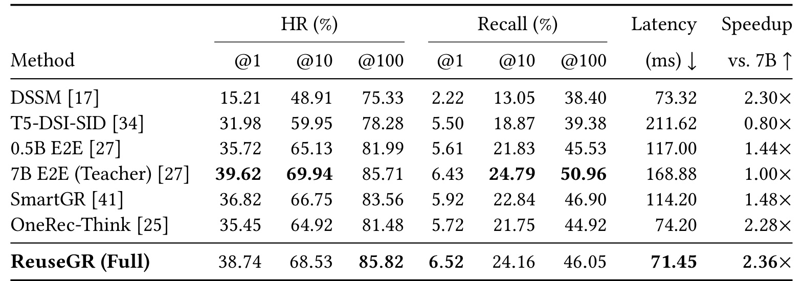
Table 1 的列同时给出不同截断位置的命中与召回，以及平均时间和相对大模型的速度。完整系统的百位命中率为百分之八十五点八二，相比在线五亿模型的百分之八十一点九九增加三点八三个百分点；平均时间从一百一十七毫秒降到七十一点四五毫秒，即降低百分之三十八点九。作者对该命中差异报告配对检验结果小于千分之一。与七十亿端到端模型相比，命中率接近，时间从一百六十八点八八降到七十一点四五毫秒，但百位召回率只有百分之四十六点零五，明显低于大模型的百分之五十点九六。蒸馏基线的百位召回也有百分之四十六点九，超过完整系统，因此不能写全面保持大模型质量。该表的工程价值是展示一种特定命中目标下的折中，完整比较仍应同时保留召回、首位质量与准备条件，而不是只选最接近大模型的一列。
3.2 深度匹配、后缀评分和集合准入的受控证据
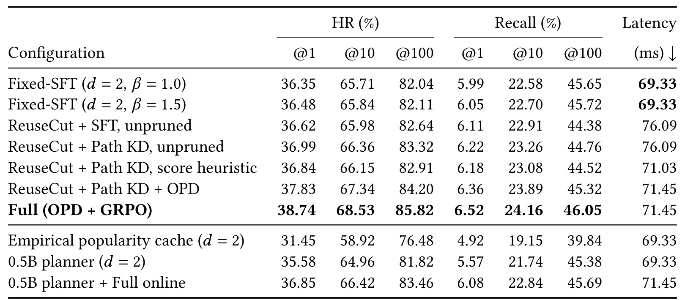
Table 2 从固定两层监督补全逐步换成自适应深度、后缀蒸馏和准入策略。自适应但未裁剪的监督模型百位命中为百分之八十二点六四，加入后缀蒸馏升到百分之八十三点三二，同样的平均时间说明评分质量改善没有增加在线模型步骤。随后，简单分数启发式只保留三十二分支，时间更短，命中却降到百分之八十二点九一；采用在策略蒸馏达到百分之八十四点二，继续强化学习达到百分之八十五点八二，准入阶段多花零点四二毫秒。不能将后一增益解释成得到更多候选，因为它们受相同预算约束、可达上限不变。表底的流行度缓存明显更差，说明共享前缀不只是复用热门叶；换成五亿离线规划器后仍有完整在线组件，却落到百分之八十三点四六，也表明大模型规划具有独立价值。不同控制行的先验权重和训练方式需随表保留，只有明确匹配的逐行变化才可当组件归因。
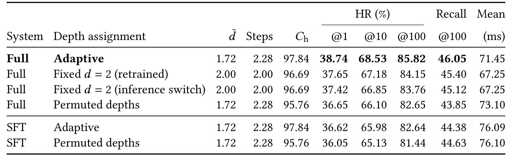
Table 3 最有解释力的对照是把深度在查询间打乱，保持平均缓存深度一点七二、平均在线步数二点二八，却破坏查询和深度的匹配。完整系统的百位命中比打乱对照高三点一七个百分点，召回高二点二零个百分点，可达命中上限也提高二点零八个百分点。这支持自适应并非单纯把平均步骤变少，而是把较深共享安排给更合适的查询。与重新训练的固定两层完整控制相比，自适应多花四点二毫秒，换来一点六七个百分点命中，故它也不是所有质量和延迟维度都更优。表末监督补全对照尤其需要保留：正确深度匹配提高命中，召回却从百分之四十四点六三降到四十四点三八，表明不同后缀评分和集合策略下同一共享设计会改变收益方向。工程选深度时应先确定业务关心任一命中还是更广目标覆盖，不能把自适应当作无条件收益开关。
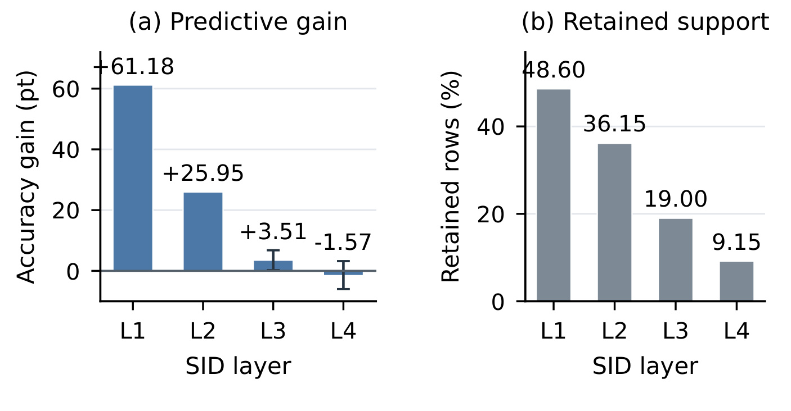
Figure 3 左侧比较同查询预测器相对匹配全局众数的准确率增量，前两层分别约六十一点一八和二十五点九五个百分点，第三层降至三点五一，第四层约负一点五七；右侧同时给出可比较记录的保留比例，从百分之四十八点六下降到百分之九点一五。两图必须一起读：深层支持越来越稀疏，第四层置信区间跨零，只能说该受支持子集没有稳定正向证据，不能说查询已没有信息。第三层区间仍在零以上，也说明共享边界不是硬性的语义分界。该诊断使用真实之前码字和整行留一，避免直接把当前目标喂给频次预测，却与真正模型生成的错误前缀分布不同。它提供设计动机，不直接证明在线个性化来自最后一层；实际收益仍要看历史扰动与同深度控制。附录的同一诊断表不再重复截图，其区间和支持口径在这里完整保留。特别是第四层的负点估计需要连同跨零区间阅读，不能单凭正负号建立层间因果解释。
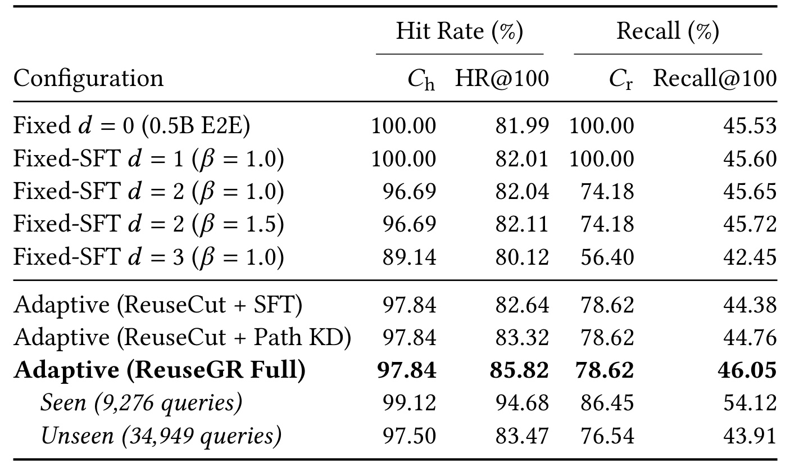
Table 8 明确分开了候选范围和排序结果：可达命中上限是一个查询至少有一个目标处在缓存子树内，可达召回上限是所有目标中仍处在子树内的比例。固定三层的可达命中为百分之八十九点一四，可达召回仅百分之五十六点四；自适应则为百分之九十七点八四和百分之七十八点六二，留出了更大的历史补全空间。但从自适应监督补全、蒸馏到完整策略，这两个上限完全不变，实际百位命中仍持续改善，说明收益来自既定可达范围内的评分与集合选择。反过来，完整系统的实际召回只有百分之四十六点零五，远低于可达召回上限，不能把所有剩余缺口归咎于前缀缓存。已见查询比未见查询的质量更高，也不能直接等同于缓存命中优势，因为主表两者都已经准备前缀，差别还包含查询分布与训练支持。这个拆分让缓存、生成和排序各自留下可单独诊断的错误空间。
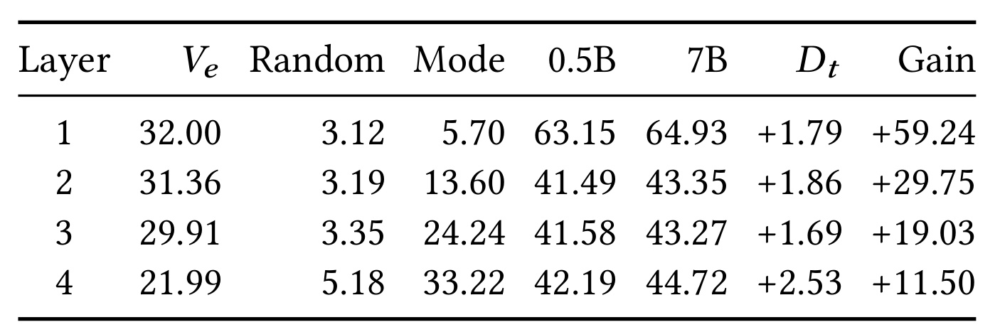
Table 7 用所有测试记录固定查询和真实前缀，比较下一词预测。七十亿模型相对五亿模型在四层都提高约一点七至二点五个百分点，第四层仍有二点五三个百分点，支持给后缀评分器蒸馏教师分布。它不能与 Figure 3 的第四层负增量混为一谈：前者比较两个模型，使用完整记录；后者比较同查询频次与全局频次，使用存在留一查询参照的子集。表中有效词表和随机准确率还提示不同层的预测难度不同，不能仅凭原始准确率判断哪层更容易。即使教师更好，也没有证明其错误对个性化历史完全无害，因为这里教师不读历史，学生部署时却要结合历史。本文将监督点击目标与教师分布混合，再冻结评分器做准入训练，是对这一不对称的实际处理；最终是否保留了用户差异，仍需下一组多历史对照来验证，而不是由逐词平均优势直接推出。合法词表逐层变化也提示，分层预测必须保持相同掩码，否则教师差距会被可选码字数量混淆。
3.3 多历史个性化、物品扩展与尾查询
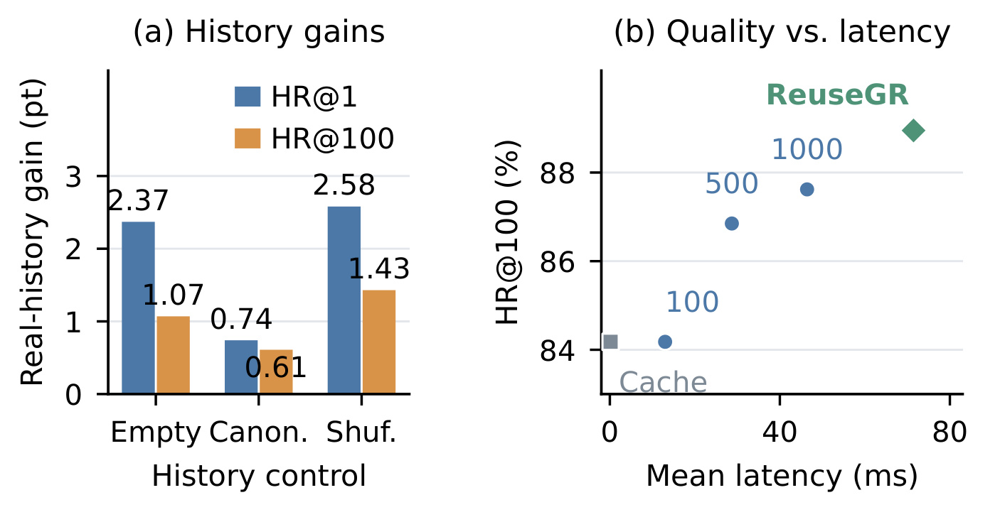
Figure 4 使用同一查询有多个历史的子集，共二十八万六千零四十六条非标准历史记录，给每行等权，而不是给每个查询等权。左图比较真实历史与空历史、标准历史、查询内打乱历史的差异；真实历史对百位命中分别提高一点零七、零点六一和一点四三个百分点，对首位命中的作用更大或不同。这表明小模型并非完全忽略历史，但这些增量不是主表的总体查询收益。右图同时放入完整标识符缓存和不同大小的重排池，随着缓存池变大，质量上升、时间也增加；ReuseGR 的质量较高，却并不处在最低延迟位置。两轴还分别采用行宏质量和标准查询工作负载的平均时延，因此散点是同方法不同评估面的联合展示，不是每个真实历史请求的逐行延迟测量。对个性化系统，更合适的结论是前缀子树能保留完整缓存之外的目标可能性，代价是额外补全计算；不能根据这个子集就声称所有查询或所有用户群的个性化都有同等收益。
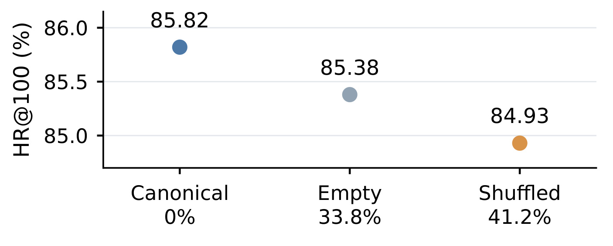
Figure 5 回到四万四千二百二十五个标准历史查询，与上一图的非标准历史行宏平均严格分开。保留标准历史时百位命中为百分之八十五点八二，改为空历史为百分之八十五点三八，打乱为百分之八十四点九三；图底的百分比则是首位预测发生变化的比例，分别约三十三点八和四十一点二，不是命中率提升。大量首位结果改变而百位命中变化较小，意味着历史可能主要调整前列或在同一宽候选范围内交换结果，也可能包含无效扰动，不能只看变化率就宣称个性化有效。真实收益需要同时满足当前历史对应的目标命中提高。该图与上一图的改变量大小不同并不矛盾，因为样本支持与加权方式不同。正文把这两个对照放在一起，可以避免用更容易显示历史差别的多历史子集，替代全体查询上的稳健性检查；也提示上线后应监控历史为空、匹配较少及近期行为突变的请求分组。
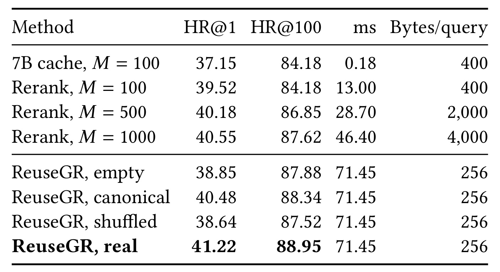
Table 4 列出每种历史处理和重排池大小的完整数值。固定一百个完整标识符时，加入历史重排提高首位命中，但百位命中仍为百分之八十四点一八，因为重排无法引入候选之外的新标识符；把池扩大到一千个后，百位命中升到百分之八十七点六二。真实历史的 ReuseGR 为百分之八十八点九五，约七十一点四五毫秒，缓存载荷二百五十六字节；一千结果重排约四十六点四毫秒、四千字节，因此这是空间、计算与覆盖的折中，而不是统一占优。作者还报告补全在百分之五点六七的行中找回大模型前一百缓存之外的点击标识符，约挽救其漏掉行的百分之三十五点八四；另有缓存命中但补全未命中的行，净收益需扣掉这部分损失。载荷只包含前缀数据，不含字典、索引、模型权重或维护开销，不能把字节比直接解释成总服务显存节省。该表最清楚地区分了重新排序现有候选和在共享子树内生成新候选。
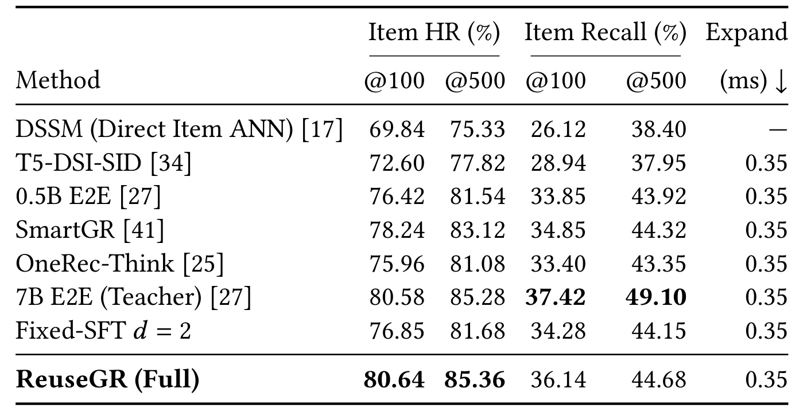
Table 12 把同一组方法变成物品级指标，以免完整标识符命中掩盖桶内选择误差。作者使用内存中的压缩稀疏行索引扩展标识符桶，桶内按开发集确定的历史先验排序，在匹配的一百或五百物品预算下去重。完整系统的物品五百位命中为百分之八十五点三六，略高于七十亿模型的百分之八十五点二八，但物品五百位召回只有百分之四十四点六八，仍低于大模型的百分之四十九点一零。相对五亿端到端模型的召回提升只有零点七六个百分点，远没有查询级“是否任一命中”的差距那么大。所有生成式方法另加零点三五毫秒扩展时间，主结果的标识符延迟不能直接当作最终候选交付时间。物品先验使用训练结束前的三十天日志并排除开发测试，能减少直接泄漏，但它仍引入额外的排序设计，迁移到不同目录粒度时需要重新验证。由此也可看出，召回系统的目标不应只停留在码字匹配，而要最终检查交给精排的真实物品集合。
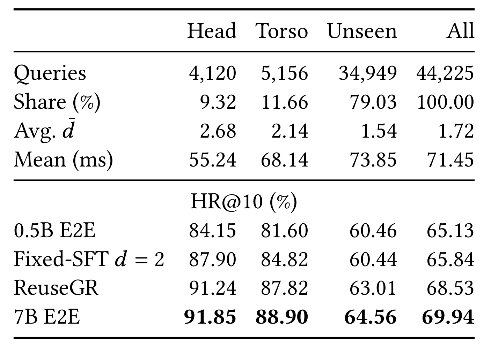
Table 13 把查询分为训练点击至少二十次的头部、少量点击的中部，以及训练中没有点击的未见组。未见查询占测试查询约百分之七十九点零三，平均缓存深度较浅、平均时间较高；这与谨慎共享边界的直觉相符，但所有数据仍是在有准备条目条件下测量。完整系统在未见组的十位命中从五亿基线的百分之六十点四六提高到百分之六十三点零一，超过固定两层基线，支持文本深度预测和大模型规划对未见查询有作用。七十亿端到端模型在所有三个频次组的十位命中仍更高，因此整体百位命中相近不能抹掉较严格截断位置的质量差距。头部平均时间约五十五点二四毫秒，未见组约七十三点八五，说明共享深度也会改变服务成本的分布。该表没有给各组线上收入或用户长期行为，不能把离线未见查询改善写成已解决冷启动商业价值；实际部署还要检查未准备查询回退、词面新颖查询和目录新增物品三种不同冷启动。
3.4 缓存准备率、维护成本与真实线上验证
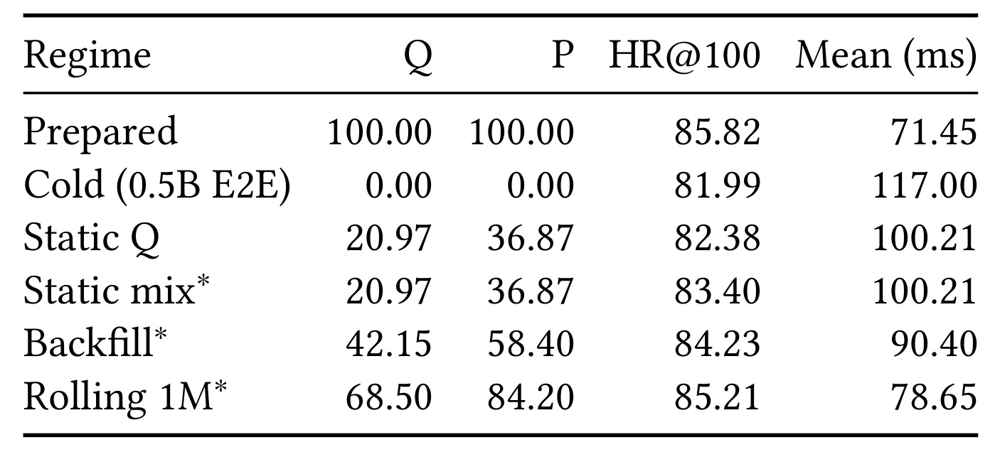
Table 5 的查询准备率与日志行准备率是两个分母，头部查询复用更多，所以相同缓存覆盖下后者通常更高。全部准备时是主表的七十一点四五毫秒与百分之八十五点八二命中；全部冷回退则是一百一十七毫秒与百分之八十一点九九。静态查询集合的实际分区命中为百分之八十二点三八，但同样行准备率套用固定端点加权会得到百分之八十三点四零，已经展示了简单投影和实际分区质量的差别。回填与滚动一百万条目继续采用端点投影，表中所有混合平均时延也都是投影，不能称为生产全流量实测。查询宏质量用日志行比例混合，额外依赖样本组成近似，最好在新业务中按真实分区重新计算。它的用途是规划准备率达到何种水平才可能得到足够收益，而不是证明上线一定有接近全准备的加速。对于突发查询、热门事件和失效缓存，均值之外仍需要看尾延迟、队列积压和回退比例。
附录将准备路径的七十一点四五毫秒分成四个不重叠阶段：查找及深度零点一八，提示与缓存前缀预填充和第三层展开六十七点零一，第四层读取及特征三点八四，准入和并集排序零点四二。预算策略减少已经评分叶子的合并池，不能把最后两阶段都说成完全省掉。准备和冷回退的实测九十五分位分别为八十六点四和一百三十二点五毫秒；串行批量一计算的每秒查询数只是该实验环境容量估计，不是实际生产并发吞吐。离线规划每查询八十八毫秒，一百万条目每天刷新百分之十需要约二点四四个 A100 GPU 小时，条目前缀载荷约二百五十六兆字节。每次缓存命中相对冷路径节省四十五点五五毫秒，从这组同硬件计算量看两次命中可摊平一次规划，但调度、并发、存储与陈旧导致的质量损失没有被这个简单盈亏平衡式覆盖。
线上试验运行于全球电商平台的搜索广告场景，十四天按用户分流，每臂百分之十流量、约一千二百八十万不同用户，其他召回通道、配额、排序和出价保持不变。未命中缓存时立即走原五亿模型，不等待大模型；需要正深度的查询进入去重、限速异步规划队列，发布后的条目服务后续请求，零深度未命中不回填。主文报告点击率相对提高百分之零点九三、每千次请求收入相对提高百分之一点零五，每请求订单数提高百分之零点七八，但点击到订单转化率相对下降百分之零点二一。后两个分母不同，可以同时发生，不能把全部漏斗指标写成向上。标识符通道曝光与点击占比增加描述的是通道参与，标签还可能重叠，不是独立增量归因。
原文最后一页附录提供了容易漏读的统计协议：按用户聚类的一千次自助重采样给出点击率相对增益的百分之九十五区间为百分之零点六二至一点二四，收入区间为百分之零点五八至一点五二；双侧检验使用聚类稳健协方差、比值的 delta 方法和正态参照，点击率与收入的精确 p 值分别为一点三六五乘十的负六次方、一点八零九乘十的负五次方。因此这两个增益可以写为作者报告的统计显著结果，不能误写成论文没有提供置信区间。每请求订单数的 p 值为零点二一零四，未达到通常显著性门槛；转化率负向没有单独给区间或检验，不替作者补显著性判断。线上结果支持完整系统的业务效果，尚不能把收益分别归因于深度预测、蒸馏或准入头，也不能把缓存准备情景的理论时延直接替换为此次试验的生产全链路时延。
4. 总结
4.1 可以迁移的设计判断
我认为 ReuseGR 最值得迁移的部分是明确共享边界，而不只是用七十亿模型替换五亿模型。它把查询的公共语义、请求历史的个体差异、叶分数的质量和最终候选集合的效用拆为四个可检查对象。缓存既不越过用户个性化边界直接保存完整答案，也不只保存无结构的文本说明；保存前缀子树让后续仍可产生未进入原完整列表的候选。对有重复意图但用户差异明显的搜索广告，这比单纯增大缓存或压缩在线骨干更有解释力。对推荐系统，是否存在可跨用户共享而不过早压缩兴趣的键，需要重新验证；对检索增强生成，也需要检查共享检索意图会不会抹掉用户权限、时效和上下文约束，不能直接把查询文本当作安全的唯一缓存键。
另一项有价值的经验是把集合目标与独立分数分开。分支都已经评分后，仍可能因为非目标高分叶竞争而损害前列召回，这说明候选组合并非总是越大越好。训练一个轻量集合准入头，可以在冻结生成器的条件下利用较便宜的离线试验搜索组合，并通过相同预算对照检查是否真正改善排序。这个思路可以启发多路召回融合、重排候选去冗余和工具候选筛选，但原文用的目标是点击日志上的标识符 Recall，不直接等价于商业价值、多样性或用户满意度。若迁移到这些目标，应重新定义集合奖励并保留真实业务验证，不能只改名字沿用原奖励分母。
4.2 局限、复现重点与后续跟进
至少四项限制会影响外推。其一，核心离线延迟依赖条目已准备，冷请求与准备零深度还有不同补全模型，维护和预填充成本不可省略；在长尾或高变化查询流量中，命中与陈旧可能决定最终收益。其二，查询宏、行宏、标识符级和物品级指标各有分母，完整系统与大模型命中接近却覆盖较低，不能只保留一个命中列。其三，工业目录与日志私有，开发集选择和抽样比例影响可复核性；代码入口本轮未独立核验，不保证外部能立即重跑。其四，准入策略对冻结叶评分和训练目标集合有依赖，前沿之外的目标、评分校准变化及训练期目标补充都可能改变部署效果。其五，线上随机试验支持的是完整系统，未做独立组件线上归因；转化率负向和订单数未显著也应与点击、收入正向一起呈现。
后续我会优先复现三组实验。首先，保持补全模型、四层码本和分支预算一致，比较固定深度、正确自适应与打乱深度，分别记录可达上限、最终命中和覆盖，检验查询与深度匹配是否比平均步数更重要。其次，在同一候选池及冻结叶分下比较独立分数、在策略蒸馏和集合强化学习，记录准入前后的目标位移、负边际效用和合并时间，确认改进不是更多候选或额外模型调用造成。第三，用真实到达序列而不是端点混合投影模拟缓存，加入准备队列、失效刷新、不同重复率与历史更新，报告全流量分位延迟和摊销成本。若前述机制重现，再按用户随机进行业务试验，并预先约定点击、收入、转化与长期质量的共同约束。原文的附录统计说明足以支持其点击和收入显著性；复现时仍应保留聚类单位、样本量和完整指标，避免只复制最醒目的两个百分数。